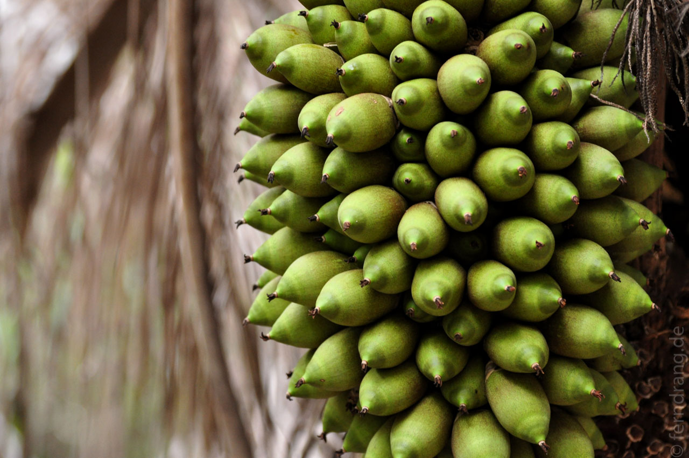
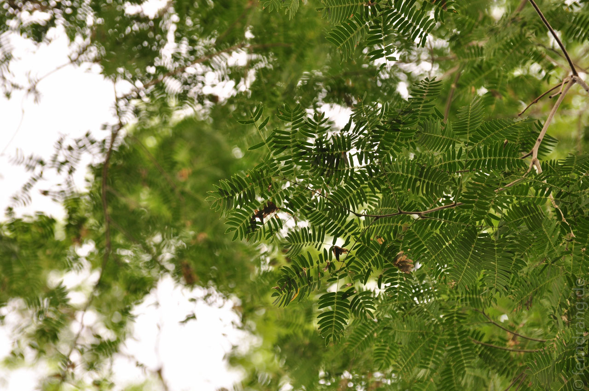
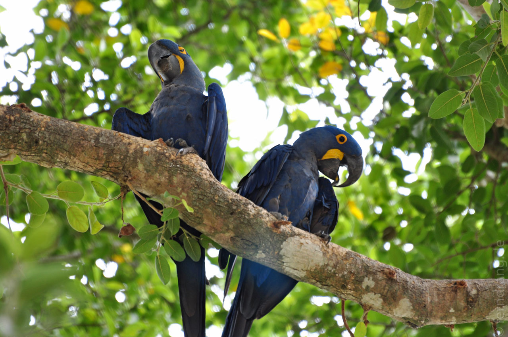
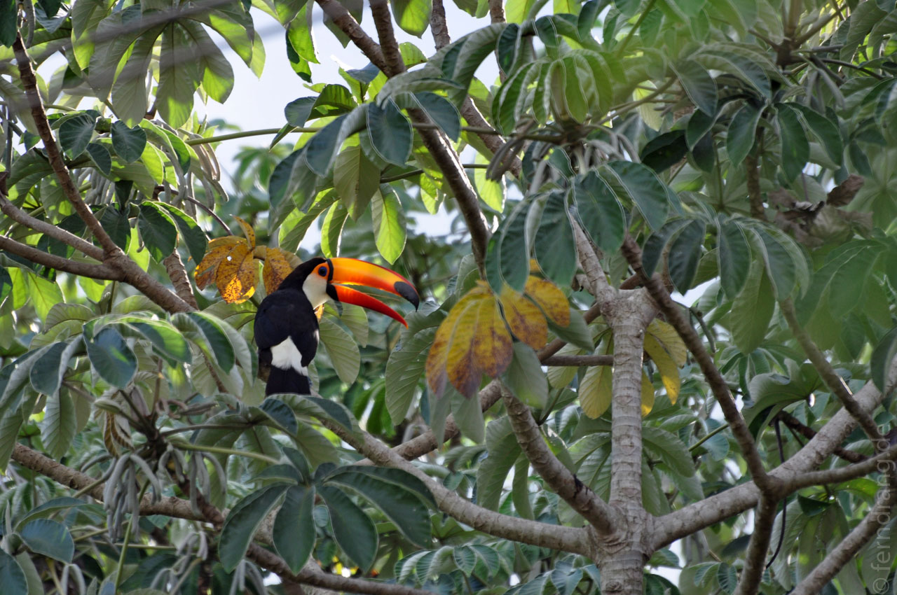
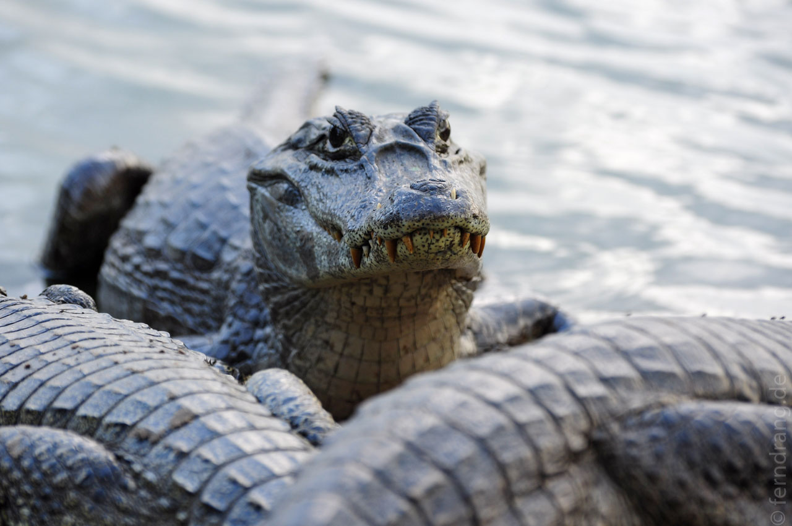
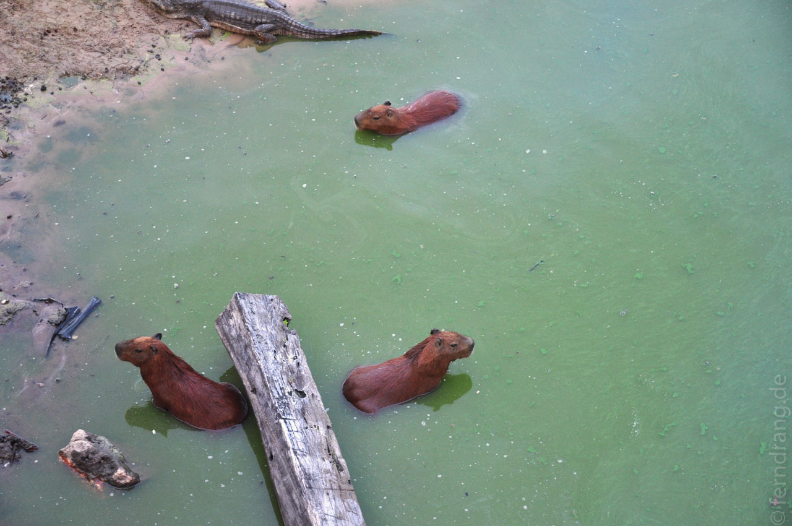
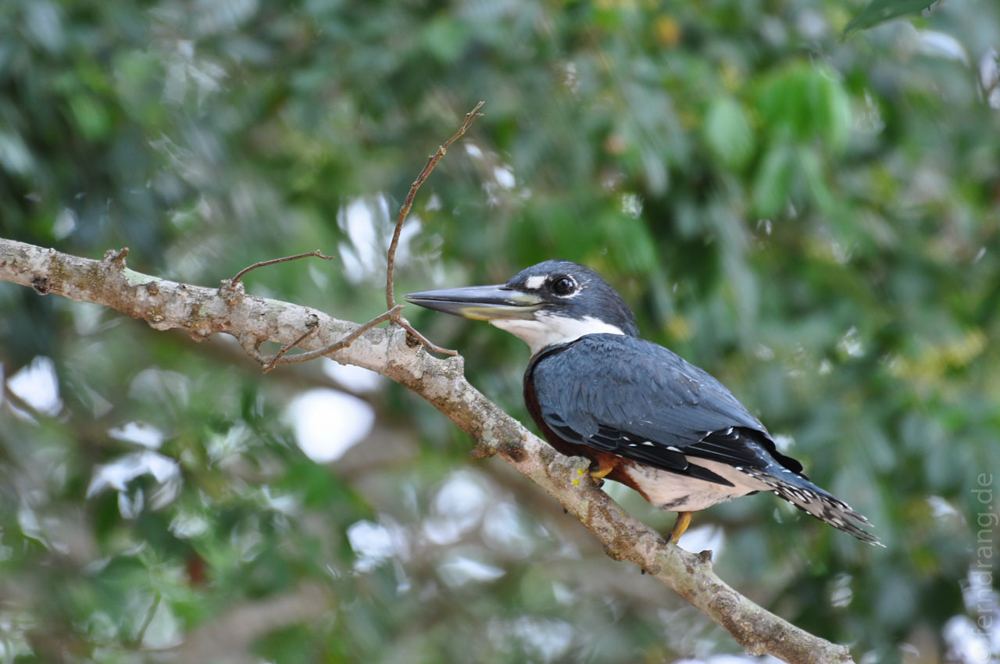
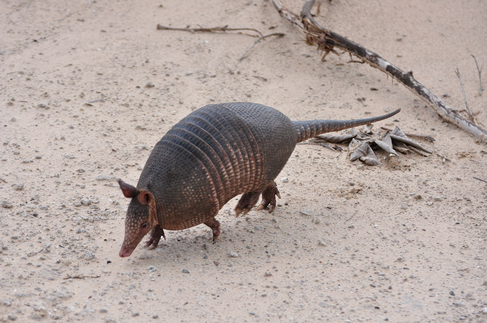

Der erste von zahlreichen Inlandsflügen hat uns über Sao Paulo nach Campo Grande gebracht, wo schon ein Jeep für die Tour ins Pantanal auf uns wartete. Hier gibt es nur Felder und vor allem Viehweiden. Die Straße führt im Wesentlichen bis Bolivien einfach nur geradeaus durch flaches Land. Vor den Kurven sind Rillen in der Straße damit man zum Lenken kurz aufwachen kann. Unser Fahrer hat die Strecke auch immer wieder für ein Nickerchen genutzt, was der monotonen Strecke doch etwas Nervenaufreibendes verliehen hat.
Für ein Feuchtgebiet kam uns die Gegend ziemlich staubig vor. Dieses Jahr war es wohl so trocken wie nie (was sich allzu bald geändert hat). Begrüßt von einem tollen Regenbogen sind wir ins Pantanal abgebogen. Die vielen Brücken zeugen von feuchteren Tagen, aber wir konnten schon die ersten Tiere sehen. Das Pantanal gehört vor allen anderen den Vögeln.
Die Pousada Santa Clara liegt mitten im Nirgendwo. Auf dem Gelände gehen die Tiere ein und aus. Eine Kuh graste neben unserer Hängematte, riesige blaue Papageien krächzen in den Bäumen und überall stolzieren Vögel herum. Morgens streiten sich die kleinen Papageien lautstark um den besten Platz auf dem Ast über unserer Hütte.
Jeden Tag stehen kleine Ausflüge auf dem Programm. Beim Busch-Spaziergang sind wir durch niedrige Palmenwälder gestreift. Schon morgens um 9 ist die Hitze kaum erträglich. Beim Piranha-Fischen hat sich die beginnende Regenzeit gemeldet und uns trotz geliehenem Ölzeugs komplett durchnässt. Es ist erstaunlich wie schnell diese Viecher den Fleischhappen vom Haken fressen - da reichen Sekunden. Statt Fischen hatten wir nur die neugierigen Kaimane an der Angel.
Durch den Regen ist es frisch, fast schon kalt geworden. Deshalb sind wir am nächsten Tag dick eingepackt zum Reitausflug erschienen. Mein Pferd hatte gewaltige Blähungen und zeigte sich trotz Zügeln und Tritten uneinsichtig. Nach kurzer Zeit hatte jedoch die Sonne wieder die Oberhand und schmorte uns auf den Pferderücken. In der schönen Landschaft war das Hochsitzen und Bewegtwerden sehr praktisch, um über die hohen Gräser in die Weite zu blicken. Trotzdem bleibt Sauerbraten der Einsatz Nr. 1 für ein Pferd.
Unser Führer Pedro kann alle Tiere am Geräusch erkennen, er horcht in die Stille, sagt "Monkeys" und ein paar Sekunden später kommen Affen aus Bäumen hervor. Faszinierend. Mit einem Safari-Jeep haben wir einen langen Ausflug in die Gegend gemacht und jede Menge Tiere gesehen. An den letzten Wasserlöchern liegen Hunderte Kaimane in regloser Stille und warten auf durstige Desperados. Nachts geben sie einen schönen Show-Effekt: Von der starken Lampe angestrahlt blitzen Unmengen orangener Augenpaare aus der Dunkelheit zurück.
Mit einem Bootsausflug endete unser Aufenthalt im Pantanal. Endlich Wasser! Der Fluss war sehr friedlich und von Reihern gesäumt. Auf den Weg haben wir wunderschöne Tucane und sogar ein Gürteltier gesehen. Alles in allem war es viel trockener, aber auch tierreicher als erwartet.
       